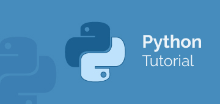

What is Object oriented Programming?
Object-oriented programming is a programming paradigm that provides a means of structuring programs so that properties and behaviors are bundled into individual objects.
For instance, an object could represent a person with properties like a name, age, and address and behaviors such as walking, talking, breathing, and running. Or it could represent an email with properties like a recipient list, subject, and body and behaviors like adding attachments and sending.
Another common programming paradigm is procedural programming, which structures a program like a recipe in that it provides a set of steps, in the form of functions and code blocks, that flow sequentially in order to complete a task.
The key takeaway is that objects are at the center of object-oriented programming in Python, not only representing the data, as in procedural programming, but in the overall structure of the program as well.
- FACTORY:
In object-oriented programming (OOP), a factory is an object for creating other objects – formally a factory is a function or method that returns objects of a varying prototype or class from some method call, which is assumed to be new
- INSTANTIATION:
Instantiating a class is creating a copy of the class which inherits all class variables and methods. Instantiating a class in Python is simple. To instantiate a class, we simply call the class as if it were a function, passing the arguments that the _init_ method defines.
- OBJECT:
An Object is an instance of a Class. A class is like a blueprint while an instance is a copy of the class with actual values. Python is object oriented programming language which stress on objects i.e. it mainly emphasize on functions.
- CLASS:
Class is a logical grouping of functions and data. Python class provides all the standard features of Object Oriented Programming. ... In Python, a class can inherit attributes and behavior methods from another class called subclass or heir class
- NAMESPACE:
Namespaces in Python. A namespace is a collection of currently defined symbolic names along with information about the object that each name references. You can think of a namespace as a dictionary in which the keys are the object names and the values are the objects themselves.
- CONSTRUCTOR:
Constructors are generally used for instantiating an object. The task of constructors is to initialize(assign values) to the data members of the class when an object of the class is created. In Python the _init_() method is called the constructor and is always called when an object is created
- FIXTURE:
Fixtures define the steps and data that constitute the arrange phase of a test (see Anatomy of a test). In pytest, they are functions you define that serve this purpose. They can also be used to define a test's act phase; this is a powerful technique for designing more complex tests.
- TYPE HINT:
Type hinting is a formal solution to statically indicate the type of a value within your Python code. It was specified in PEP 484 and introduced in Python 3.5. Here's an example of adding type information to a function
- TYPE CAST:
Type casting is a method used to change the variables/ values declared in a certain data type into a different data type to match the operation required to be performed by the code snippet. In python, this feature can be accomplished by using constructor functions like int(), string(), float(), etc
- UNIT TEST:
The unit test framework in Python is called unittest , which comes packaged with Python. Unit testing makes your code future proof since you anticipate the cases where your code could potentially fail or produce a bug. Though you cannot predict all of the cases, you still address most of them
- STATIC:
The static variable and static method are the widely used programming concepts in various languages such as C++, PHP, Java, etc. These variables and methods belong to the class and the objects. In this section, we will learn how we create static variables and methods in Python.
- CLASS METHOD:
The static variable and static method are the widely used programming concepts in various languages such as C++, PHP, Java, etc. These variables and methods belong to the class and the objects. In this section, we will learn how we create static variables and methods in Python.
- FACADE:
Facade is a structural design pattern that provides a simplified (but limited) interface to a complex system of classes, library or framework. While Facade decreases the overall complexity of the application, it also helps to move unwanted dependencies to one place.
- DESIGN PATTERNS:
Design Patterns is the most essential part of Software Engineering, as they provide the general repeatable solution to a commonly occurring problem in software design. They usually represent some of the best practices adopted by experienced object-oriented software developers
- METHOD:
A method is a function that “belongs to” an object. (In Python, the term method is not unique to class instances: other object types can have methods as well. For example, list objects have methods called append, insert, remove, sort, and so on